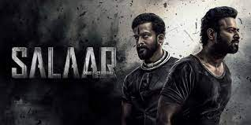
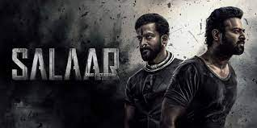

Salaar: Part 1 – Ceasefire (transl.Commander) is a 2023 Indian Telugu-language epic action film written and directed by Prashanth Neel and produced by Vijay Kiragandur. It stars Prabhas and Prithviraj Sukumaran, with a supporting cast that includes Shruti Haasan, Jagapathi Babu, Bobby Simha, Tinnu Anand, Easwari Rao, Sriya Reddy and Ramachandra Raju. Set in the fictional dystopian city-state of Khansaar, the film follows the friendship between Deva (Prabhas), a tribesman, and Varadha (Prithviraj), the prince of Khansaar. When a coup d'état is planned by his father's ministers and his relatives, Varadha enlists Deva's help to become Khansaar's undisputed ruler. The film's initial story was pitched from Neel's debut film Ugramm (2014)[4] and is the maiden part of a two-part film. It was officially announced in December 2020 under the title Salaar, however, in July 2023, the official title was announced as Salaar: Part 1 - Ceasefire. Principal photography commenced in January 2021, and occurred sporadically in several legs over nearly three years, before wrapping in late 2023. Filming locations included Telangana, Italy and Budapest. Production difficulties, ranging from the pandemic, reshoots and VFX delays, postponed Salaar's release date several times. The film has music composed by Ravi Basrur, cinematography handled by Bhuvan Gowda and editing by Ujwal Kulkarni. The film had already earned Rs 350 crore from the non-theatrical rights including satellite, digital and audio before release

ఉప్పలపాటి వెంకట సూర్యనారాయణ ప్రభాస్ రాజు (జననం 23 అక్టోబర్ 1979). ప్రధానంగా తెలుగు సినిమాలో పనిచేసే భారతీయ నటుడు. 2015లో, ఎస్.ఎస్.రాజమౌళి తెరకెక్కించిన ఎపిక్ యాక్షన్ డ్రామాలో ప్రభాస్ టైటిల్ రోల్ పోషించాడు బాహుబలి: ది బిగినింగ్, ఇది అత్యధిక వసూళ్లు సాధించిన పదమూడవది. సాహో (2019) మరియు సలార్: పార్ట్ 1 కాల్పుల విరమణ
శృతి హాసన్ (జననం 28 జనవరి 1986) ఒక భారతీయ నటి మరియు గాయని తెలుగు, హిందీ మరియు తమిళ చిత్రాలలో పని చేస్తుంది. హాసన్ తనని తాను స్థాపించుకున్నాడు ఓ మై ఫ్రెండ్ (2011), గబ్బర్ అనే తెలుగు చిత్రాలతో దక్షిణ భారత సినిమా సింగ్ (2012). ఆమె తెలుగులో ఉత్తమ నటిగా ఫిల్మ్ఫేర్ అవార్డును గెలుచుకుంది జాతి గుర్రం.
వీరమాచనేని జగపతి చౌదరి (జననం 12 ఫిబ్రవరి 1962), వృత్తిపరంగా జగపతి బాబు అని పిలుస్తారు, అతను ప్రసిద్ధి చెందిన భారతీయ నటుడు తెలుగు చిత్రసీమలో పనిచేస్తున్నారు. కోడి వంటి ప్రముఖ దర్శకులతో పనిచేశారు రామకృష్ణ, S.V.కృష్ణా రెడ్డి, రామ్ గోపాల్ వర్మ, కృష్ణ, E.V.V. సత్యనారాయణ, గుణశేఖర్, చంద్ర శేఖర్ యేలేటి, శివ, ఎ.ఎం.రత్నం, కె. రాఘవేంద్రరావు

గరుడ రామునిగా ప్రసిద్ధి చెందిన రామచంద్రరాజు భారతీయ నటుడు ప్రధానంగా కన్నడ, తమిళం, తెలుగు మరియు మలయాళ చిత్రాలలో కనిపిస్తుంది. అతను లేచాడు K.G.F ఫిల్మ్ సిరీస్లో ప్రతినాయకుడు గరుడ పాత్రలో తన పాత్రకు పేరు తెచ్చుకున్నాడు. అతను K.G.F: చాప్టర్ 1లో తన ప్రతినాయక పాత్రకు మరియు అతని కోసం కీర్తిని పొందాడు. ఆధిపత్య స్క్రీన్ ఉనికి.